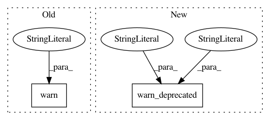

b100c00f5224ee76f4af99dd654cc1f795363490,lib/matplotlib/gridspec.py,GridSpec,get_subplot_params,#GridSpec#Any#Any#,274
Before Change
parameters are from rcParams unless a figure attribute is set.
if fig is not None:
warnings.warn("the "fig" kwarg is deprecated "
"use "figure" instead", mplDeprecation)
if figure is None:
figure = fig
if figure is None:
After Change
parameters are from rcParams unless a figure attribute is set.
if fig is not None:
cbook.warn_deprecated("2.2", "fig", obj_type="keyword argument",
alternative="figure")
if figure is None:
figure = fig
if figure is None:
In pattern: SUPERPATTERN
Frequency: 3
Non-data size: 2
Instances
Project Name: matplotlib/matplotlib
Commit Name: b100c00f5224ee76f4af99dd654cc1f795363490
Time: 2018-07-01
Author: anntzer.lee@gmail.com
File Name: lib/matplotlib/gridspec.py
Class Name: GridSpec
Method Name: get_subplot_params
Project Name: matplotlib/matplotlib
Commit Name: 6c0aa84dfb53a631d5455e7ed167823ef062c37f
Time: 2018-10-26
Author: anntzer.lee@gmail.com
File Name: lib/matplotlib/offsetbox.py
Class Name: AnchoredText
Method Name: __init__
Project Name: matplotlib/matplotlib
Commit Name: b100c00f5224ee76f4af99dd654cc1f795363490
Time: 2018-07-01
Author: anntzer.lee@gmail.com
File Name: lib/matplotlib/gridspec.py
Class Name: GridSpecFromSubplotSpec
Method Name: get_subplot_params